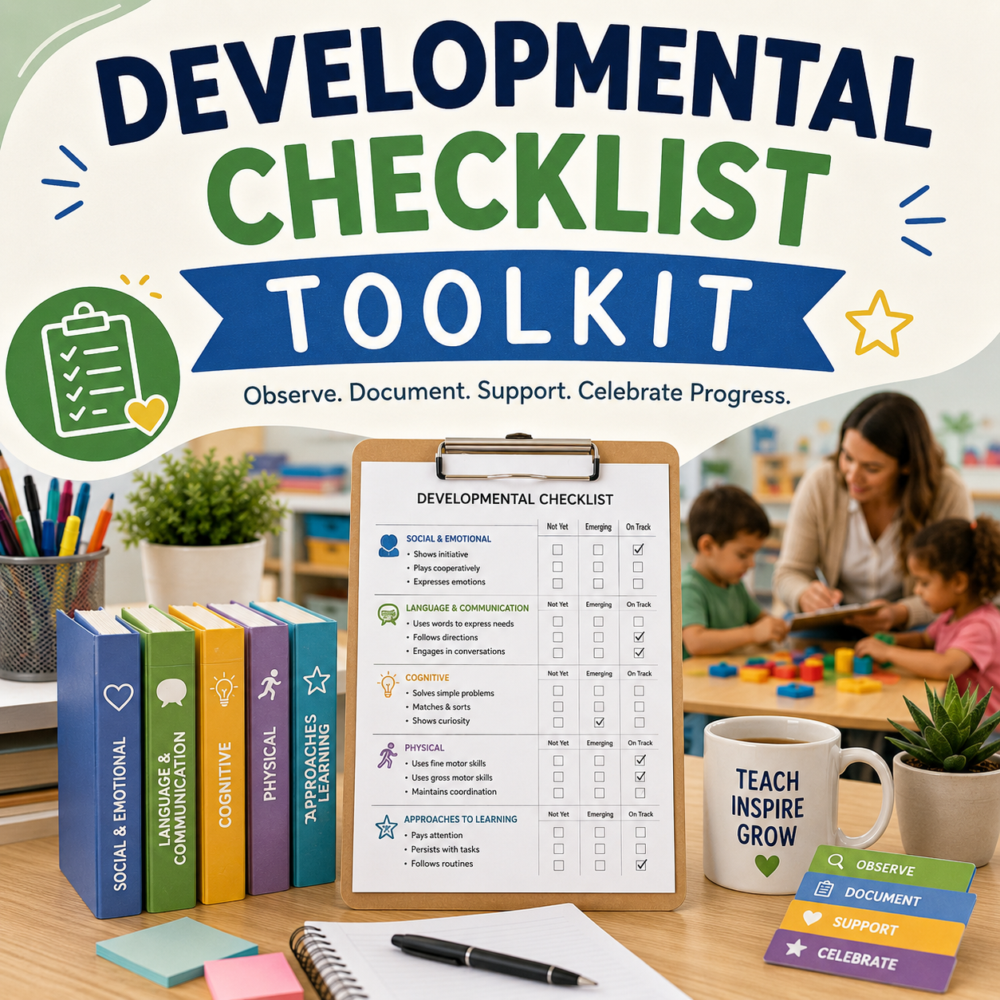
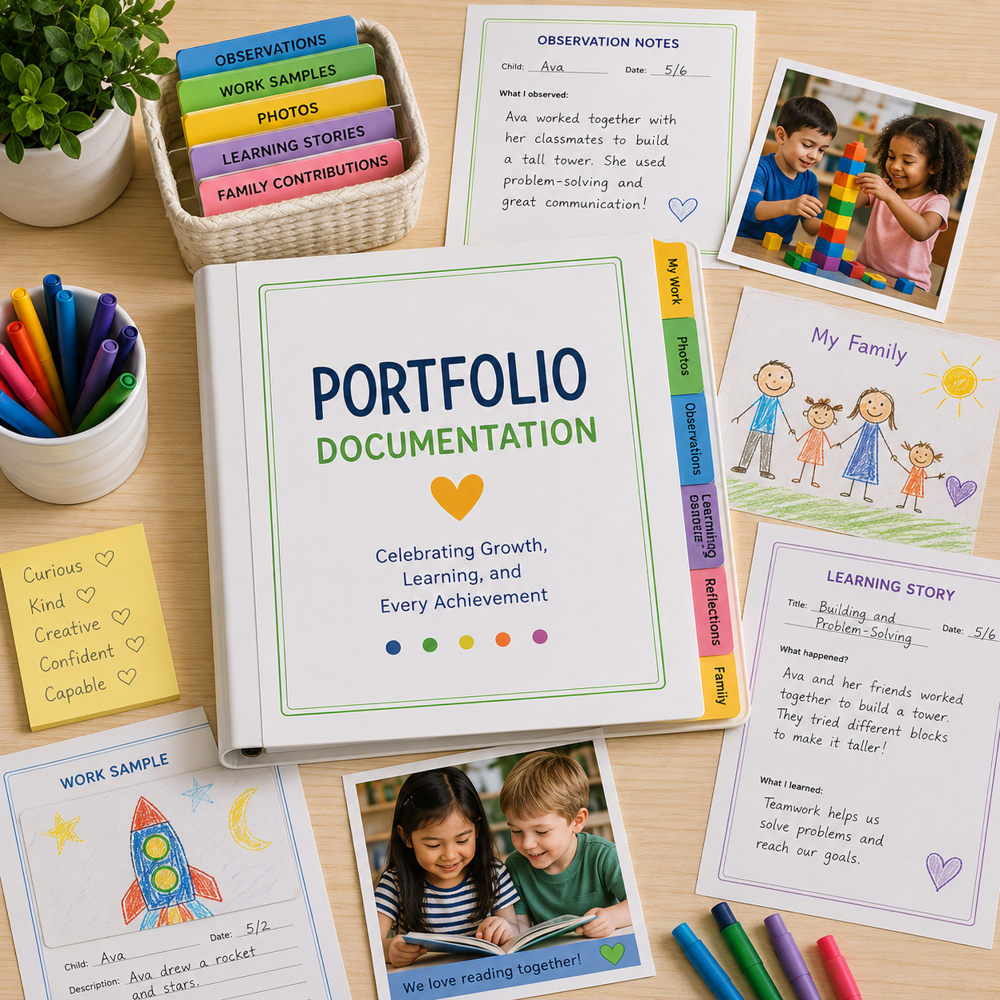
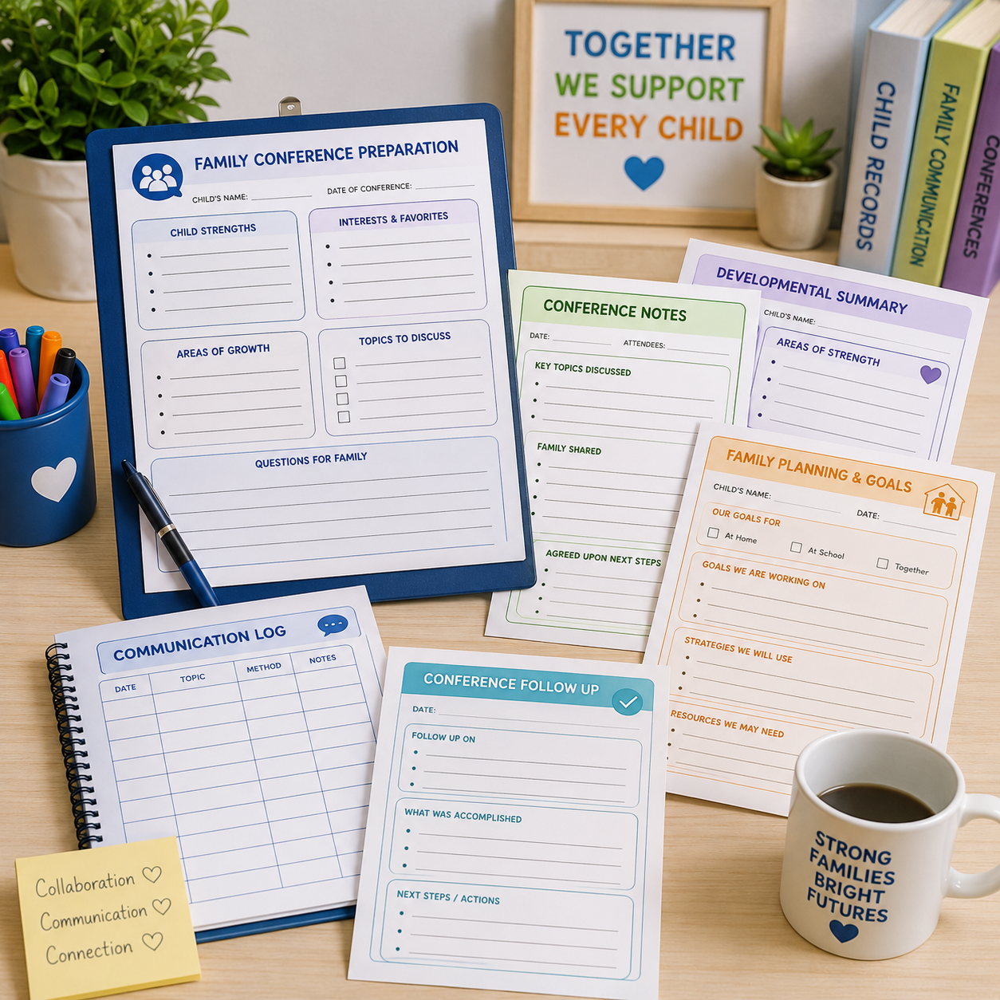
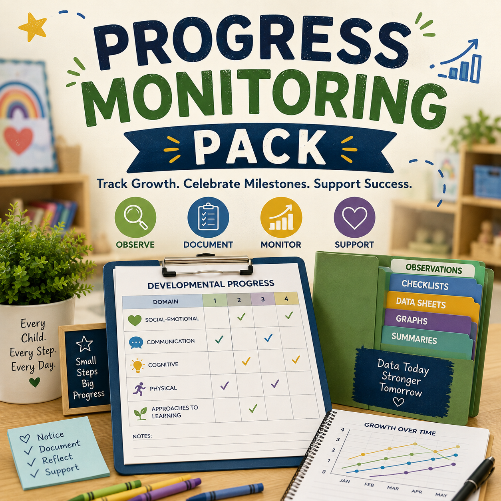
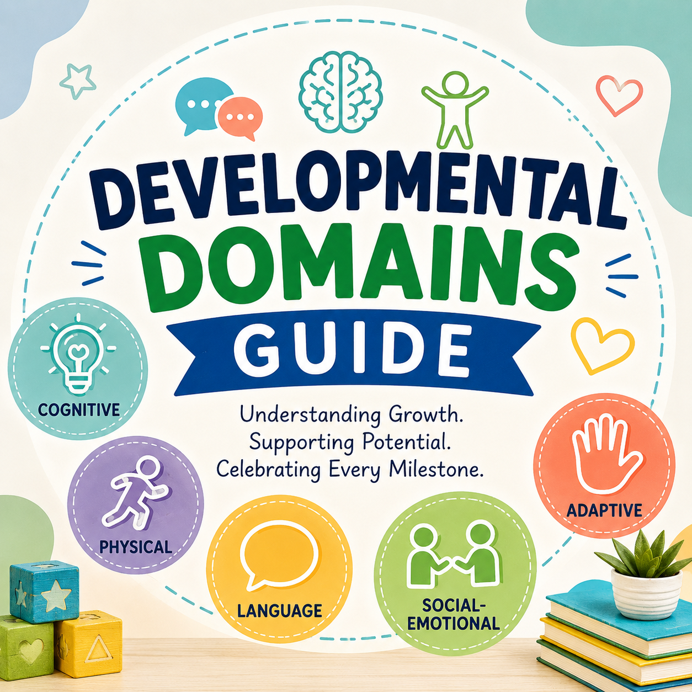

Observe
Watch children naturally as they play, explore, create, communicate, investigate, and interact throughout the day.
Every meaningful learning experience begins with careful observation. Authentic assessment allows educators to discover each child's strengths, interests, developmental progress, and emerging skills while children learn naturally through play, exploration, conversation, and everyday classroom experiences. Little Explorers Learning Hub provides classroom ready observation forms, documentation tools, developmental checklists, portfolio resources, progress monitoring forms, family conference resources, and professional assessment tools designed for Early Head Start, Head Start, Preschool, and Pre K educators.
Observation is one of the most valuable tools an early childhood educator possesses. Every conversation, smile, question, discovery, challenge, and accomplishment provides meaningful insight into a child's development.
Rather than interrupting children's learning through formal testing, educators gather evidence throughout the day while children explore centers, participate in group activities, interact with classmates, investigate new materials, and engage in imaginative play.

Observation is not a single event. It is a continuous process that helps teachers make informed instructional decisions while supporting each child's unique learning journey.
Watch children naturally as they play, explore, create, communicate, investigate, and interact throughout the day.
Capture meaningful evidence using anecdotal notes, photographs, work samples, developmental checklists, and observation forms.
Review collected observations to identify developmental progress, emerging skills, strengths, interests, and patterns.
Design intentional learning experiences that build upon children's interests while supporting individual goals and developmental needs.
Move from observation to documentation, developmental tracking, portfolio assessment, family collaboration, and intentional planning with dedicated assessment resources.

Record children's learning through anecdotal records, running records, event sampling, time sampling, and classroom observation documentation.
Explore Observation Forms →
Monitor children's development across communication, physical, cognitive, social emotional, adaptive, literacy, and early learning areas.
Explore Developmental Checklists →
Organize observations, work samples, photographs, family contributions, developmental evidence, learning stories, and child reflections.
Explore Portfolio Documentation →
Prepare for meaningful family conversations with conference preparation forms, conference notes, developmental summaries, planning forms, communication logs, and follow up documentation.
Explore Family Conferences →
Monitor children's development throughout the school year with ongoing observations, developmental evidence, emerging skills, progress reviews, and intentional planning.
Explore Progress Monitoring →Explore the complete Observation & Assessment Toolkit with printable forms and editable Microsoft Word resources for classroom documentation.
Explore Assessment Toolkit →A well organized portfolio tells the complete story of a child's growth by bringing together authentic evidence from classroom experiences, families, and children themselves.
Collect artwork, writing, STEM projects, construction creations, and classroom activities that demonstrate learning.
Portfolio ResourcesPreserve authentic moments of exploration, collaboration, investigation, dramatic play, outdoor learning, and discovery.
Portfolio ResourcesCombine photographs, observations, child quotes, and teacher reflection to tell the story behind children's learning.
Portfolio ResourcesInvite families to contribute photographs, stories, accomplishments, cultural experiences, interests, and learning from home.
Portfolio ResourcesProvide children opportunities to talk about their work, explain their thinking, share what they enjoyed, and reflect on documented experiences.
Portfolio ResourcesReview collected evidence to identify developmental growth, recurring interests, emerging skills, strengths, and opportunities for intentional teaching.
Portfolio ResourcesProgress monitoring allows educators to follow children's development throughout the school year rather than relying on a single snapshot of development.
Teachers can document observations, dates, developmental evidence, emerging skills, strengths, interests, and progress and then use that information to guide intentional teaching.

Families provide important information about children's development, interests, experiences, strengths, and learning beyond the classroom.
Prepare observations, strengths, interests, questions, family priorities, and topics for meaningful conversations.
Family Conference ResourcesWork together with families to identify priorities, goals, strategies, resources, and next steps.
Family Conference ResourcesKeep organized records of family communication, important updates, shared observations, follow up conversations, and meaningful connections.
Communication ResourcesRecord agreed upon next steps, commitments, teaching strategies, resources, follow up dates, and continuing actions.
Follow Up ResourcesDevelopmental screening helps educators and families identify children's strengths while recognizing areas that may benefit from additional support. Screening information should be considered alongside authentic classroom observations and family collaboration.
Learn how the Ages & Stages Questionnaires support early identification across areas of child development.
Explore developmental assessment information that can support school readiness and individualized instruction.
Review developmental screening information that can support early identification and educational planning.
Maintain organized records for vision and hearing screenings, referrals, follow up services, and completed health requirements.
Monitor dental examinations, nutrition information, growth records, and wellness documentation throughout the school year.
Keep health documentation organized alongside developmental records and classroom assessment information.
Download ready to use assessment resources designed to support documentation, developmental tracking, and ongoing progress monitoring.
A complete collection of developmental checklists, observation documentation, assessment forms, and classroom resources organized into one convenient download.
Download Complete Toolkit →
A quick reference guide explaining developmental domains with examples of observable skills and classroom behaviors.
Download Domains Guide →Monthly tracking sheets, milestone summaries, planning forms, and classroom documentation tools for monitoring children's progress throughout the year.
Download Progress Monitoring Pack →Strong assessment practices connect what teachers observe with what they document, what they plan, and how they partner with families.
Notice children's actions, words, interests, relationships, discoveries, and emerging abilities.
Observation FormsPreserve meaningful evidence through photographs, work samples, observations, and portfolios.
Portfolio DocumentationFollow developmental growth and emerging skills over time.
Progress MonitoringShare information with families and work together to identify meaningful next steps.
Family Conferences{kind=link}